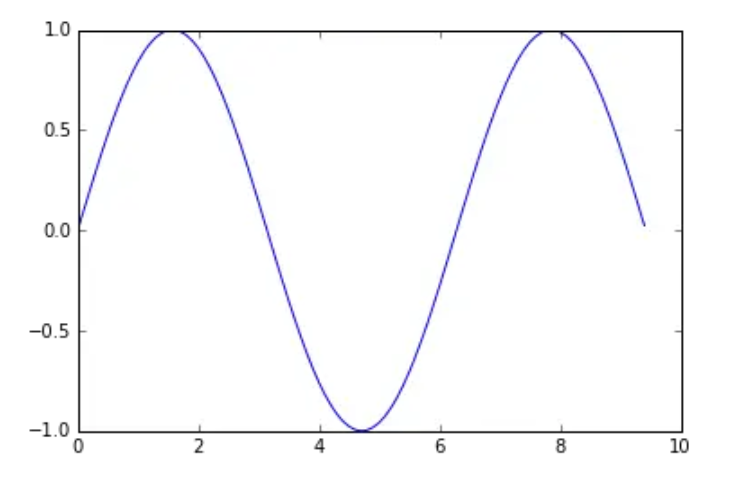
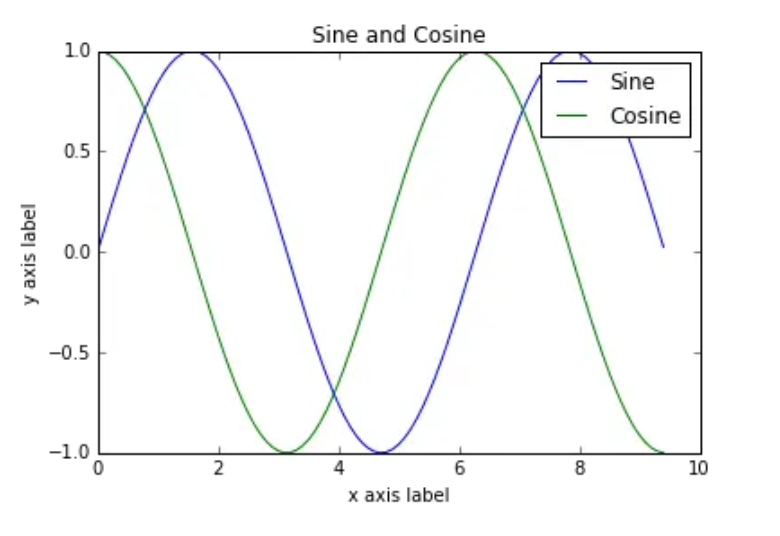
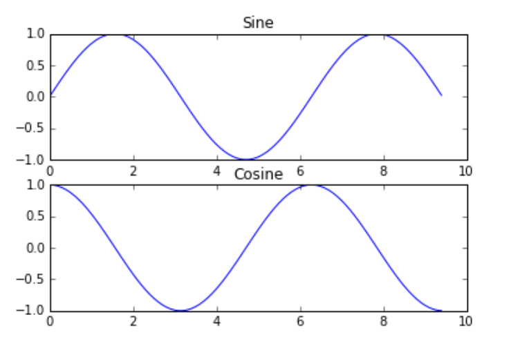
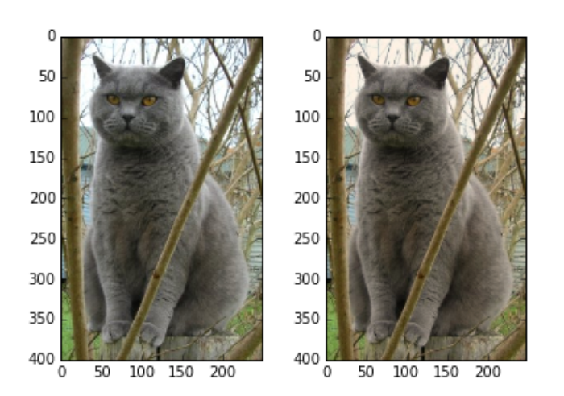

Numpy学习笔记
参考：CS231n课程笔记翻译：Python Numpy教程、Python Numpy Tutorial (with Jupyter and Colab)
Python¶
1. 字符串¶
对象的一些用法
s = "hello"
print s.capitalize() # 大写首字母; prints "Hello"
print s.upper() # 转化成大写; prints "HELLO"
print s.rjust(7) # 右边填充成7个字符的长度; prints " hello"
print s.center(7) # 填充成7个字符的长度并居中; prints " hello "
print s.replace('l', '(ell)') # 替换所有匹配; prints "he(ell)(ell)o"
print ' world '.strip() # 去除空白字符; prints "world"
2. 列表¶
想要在循环体内访问每个元素的指针，可以使用内置的 enumerate 函数
animals = ['cat', 'dog', 'monkey']
for idx, animal in enumerate(animals):
print '#%d: %s' % (idx + 1, animal)
# Prints "#1: cat", "#2: dog", "#3: monkey", each on its own line
<div markdown="1" style="margin-top: -30px; font-size: 0.75em; opacity: 0.7;">
:material-circle-edit-outline: 约 1747 个字 :fontawesome-solid-code: 441 行代码 :material-clock-time-two-outline: 预计阅读时间 11 分钟
</div>
列表推导
nums = [0, 1, 2, 3, 4]
squares = [x ** 2 for x in nums]
print squares # Prints [0, 1, 4, 9, 16]
nums = [0, 1, 2, 3, 4]
even_squares = [x ** 2 for x in nums if x % 2 == 0]
print even_squares # Prints "[0, 4, 16]"
3. 字典¶
一些基本的用法
d = {'cat': 'cute', 'dog': 'furry'} # Create a new dictionary with some data
print d['cat'] # Get an entry from a dictionary; prints "cute"
print 'cat' in d # Check if a dictionary has a given key; prints "True"
d['fish'] = 'wet' # Set an entry in a dictionary
print d['fish'] # Prints "wet"
# print d['monkey'] # KeyError: 'monkey' not a key of d
print d.get('monkey', 'N/A') # Get an element with a default; prints "N/A"
print d.get('fish', 'N/A') # Get an element with a default; prints "wet"
del d['fish'] # Remove an element from a dictionary
print d.get('fish', 'N/A') # "fish" is no longer a key; prints "N/A"
用键来进行迭代
d = {'person': 2, 'cat': 4, 'spider': 8}
for animal in d:
legs = d[animal]
print 'A %s has %d legs' % (animal, legs)
# Prints "A person has 2 legs", "A spider has 8 legs", "A cat has 4 legs"
要同时访问键和对应的值
d = {'person': 2, 'cat': 4, 'spider': 8}
for animal, legs in d.iteritems():
print 'A %s has %d legs' % (animal, legs)
# Prints "A person has 2 legs", "A spider has 8 legs", "A cat has 4 legs"
字典推导
nums = [0, 1, 2, 3, 4]
even_num_to_square = {x: x ** 2 for x in nums if x % 2 == 0}
print even_num_to_square # Prints "{0: 0, 2: 4, 4: 16}"
4. 集合¶
一些简单的操作
animals = {'cat', 'dog'}
print 'cat' in animals # Check if an element is in a set; prints "True"
print 'fish' in animals # prints "False"
animals.add('fish') # Add an element to a set
print 'fish' in animals # Prints "True"
print len(animals) # Number of elements in a set; prints "3"
animals.add('cat') # Adding an element that is already in the set does nothing
print len(animals) # Prints "3"
animals.remove('cat') # Remove an element from a set
print len(animals) # Prints "2"
循环同列表
集合推导
from math import sqrt
nums = {int(sqrt(x)) for x in range(30)}
print nums # Prints "set([0, 1, 2, 3, 4, 5])"
5. 元组¶
元组是一个值的有序列表（不可改变）。从很多方面来说，元组和列表都很相似。和列表最重要的不同在于，元组可以在字典中用作键，还可以作为集合的元素，而列表不行。例子如下：
d = {(x, x + 1): x for x in range(10)} # Create a dictionary with tuple keys
print d
t = (5, 6) # Create a tuple
print type(t) # Prints "<type 'tuple'>"
print d[t] # Prints "5"
print d[(1, 2)] # Prints "1"
Numpy¶
Numpy 是 Python 中用于科学计算的核心库。它提供了高性能的多维数组对象，以及相关工具。
创建数组Array¶
一个numpy数组是一个由不同数值组成的网格。网格中的数据都是同一种数据类型，可以通过非负整型数的元组来访问。维度的数量被称为数组的阶。我们可以从列表创建数组，然后利用方括号访问其中的元素。
import numpy as np
a = np.array([1, 2, 3]) # Create a rank 1 array
print type(a) # Prints "<type 'numpy.ndarray'>"
print a.shape # Prints "(3,)"
print a[0], a[1], a[2] # Prints "1 2 3"
a[0] = 5 # Change an element of the array
print a # Prints "[5, 2, 3]"
b = np.array([[1,2,3],[4,5,6]]) # Create a rank 2 array
print b # 显示一下矩阵b
print b.shape # Prints "(2, 3)"
print b[0, 0], b[0, 1], b[1, 0] # Prints "1 2 4"
Numpy 还提供了很多其他创建数组的方法：
import numpy as np
a = np.zeros((2,2)) # Create an array of all zeros
print a # Prints "[[ 0. 0.]
# [ 0. 0.]]"
b = np.ones((1,2)) # Create an array of all ones
print b # Prints "[[ 1. 1.]]"
c = np.full((2,2), 7) # Create a constant array
print c # Prints "[[ 7. 7.]
# [ 7. 7.]]"
d = np.eye(2) # Create a 2x2 identity matrix
print d # Prints "[[ 1. 0.]
# [ 0. 1.]]"
e = np.random.random((2,2)) # Create an array filled with random values
print e # Might print "[[ 0.91940167 0.08143941]
# [ 0.68744134 0.87236687]]"
其他的方法详见官方文档。
访问数组¶
和Python列表类似，numpy数组可以使用切片语法。因为数组可以是多维的，所以必须为每个维度指定好切片。
import numpy as np
# Create the following rank 2 array with shape (3, 4)
# [[ 1 2 3 4]
# [ 5 6 7 8]
# [ 9 10 11 12]]
a = np.array([[1,2,3,4], [5,6,7,8], [9,10,11,12]])
# Use slicing to pull out the subarray consisting of the first 2 rows
# and columns 1 and 2; b is the following array of shape (2, 2):
# [[2 3]
# [6 7]]
b = a[:2, 1:3]
# A slice of an array is a view into the same data, so modifying it
# will modify the original array.
print a[0, 1] # Prints "2"
b[0, 0] = 77 # b[0, 0] is the same piece of data as a[0, 1]
print a[0, 1] # Prints "77"
使用切片来单独提取某一行或者某一列，可以看到使用切片来获取和使用整数来获取，结果会有所区别。
import numpy as np
# Create the following rank 2 array with shape (3, 4)
# [[ 1 2 3 4]
# [ 5 6 7 8]
# [ 9 10 11 12]]
a = np.array([[1,2,3,4], [5,6,7,8], [9,10,11,12]])
# Two ways of accessing the data in the middle row of the array.
# Mixing integer indexing with slices yields an array of lower rank,
# while using only slices yields an array of the same rank as the
# original array:
row_r1 = a[1, :] # Rank 1 view of the second row of a
row_r2 = a[1:2, :] # Rank 2 view of the second row of a
print row_r1, row_r1.shape # Prints "[5 6 7 8] (4,)"
print row_r2, row_r2.shape # Prints "[[5 6 7 8]] (1, 4)"
# We can make the same distinction when accessing columns of an array:
col_r1 = a[:, 1]
col_r2 = a[:, 1:2]
print col_r1, col_r1.shape # Prints "[ 2 6 10] (3,)"
print col_r2, col_r2.shape # Prints "[[ 2]
# [ 6]
# [10]] (3, 1)"
整型数组访问¶
当我们使用切片语法访问数组时，得到的总是原数组的一个子集。整型数组访问允许我们利用其它数组的数据构建一个新的数组：
import numpy as np
a = np.array([[1,2], [3, 4], [5, 6]])
# An example of integer array indexing.
# The returned array will have shape (3,) and
print a[[0, 1, 2], [0, 1, 0]] # Prints "[1 4 5]"
# The above example of integer array indexing is equivalent to this:
print np.array([a[0, 0], a[1, 1], a[2, 0]]) # Prints "[1 4 5]"
# When using integer array indexing, you can reuse the same
# element from the source array:
print a[[0, 0], [1, 1]] # Prints "[2 2]"
# Equivalent to the previous integer array indexing example
print np.array([a[0, 1], a[0, 1]]) # Prints "[2 2]"
整型数组访问语法还有个有用的技巧，可以用来选择或者更改矩阵中每行中的一个元素：
import numpy as np
# Create a new array from which we will select elements
a = np.array([[1,2,3], [4,5,6], [7,8,9], [10, 11, 12]])
print a # prints "array([[ 1, 2, 3],
# [ 4, 5, 6],
# [ 7, 8, 9],
# [10, 11, 12]])"
# Create an array of indices
b = np.array([0, 2, 0, 1])
# Select one element from each row of a using the indices in b
print a[np.arange(4), b] # Prints "[ 1 6 7 11]"
# Mutate one element from each row of a using the indices in b
a[np.arange(4), b] += 10
print a # prints "array([[11, 2, 3],
# [ 4, 5, 16],
# [17, 8, 9],
# [10, 21, 12]])
布尔型数组访问¶
布尔型数组访问可以让你选择数组中任意元素。通常，这种访问方式用于选取数组中满足某些条件的元素，举例如下：
import numpy as np
a = np.array([[1,2], [3, 4], [5, 6]])
bool_idx = (a > 2) # Find the elements of a that are bigger than 2;
# this returns a numpy array of Booleans of the same
# shape as a, where each slot of bool_idx tells
# whether that element of a is > 2.
print bool_idx # Prints "[[False False]
# [ True True]
# [ True True]]"
# We use boolean array indexing to construct a rank 1 array
# consisting of the elements of a corresponding to the True values
# of bool_idx
print a[bool_idx] # Prints "[3 4 5 6]"
# We can do all of the above in a single concise statement:
print a[a > 2] # Prints "[3 4 5 6]"
更多数组访问内容可查看官方文档。
数据类型¶
每个Numpy数组都是数据类型相同的元素组成的网格。Numpy提供了很多的数据类型用于创建数组。当你创建数组的时候，Numpy会尝试猜测数组的数据类型，你也可以通过参数直接指定数据类型，例子如下：
import numpy as np
x = np.array([1, 2]) # Let numpy choose the datatype
print x.dtype # Prints "int64"
x = np.array([1.0, 2.0]) # Let numpy choose the datatype
print x.dtype # Prints "float64"
x = np.array([1, 2], dtype=np.int64) # Force a particular datatype
print x.dtype # Prints "int64"
更多细节查看官方文档。
数组计算¶
基本数学计算函数会对数组中元素逐个进行计算，既可以利用操作符重载，也可以使用函数方式：
import numpy as np
x = np.array([[1,2],[3,4]], dtype=np.float64)
y = np.array([[5,6],[7,8]], dtype=np.float64)
# Elementwise sum; both produce the array
# [[ 6.0 8.0]
# [10.0 12.0]]
print x + y
print np.add(x, y)
# Elementwise difference; both produce the array
# [[-4.0 -4.0]
# [-4.0 -4.0]]
print x - y
print np.subtract(x, y)
# Elementwise product; both produce the array
# [[ 5.0 12.0]
# [21.0 32.0]]
print x * y
print np.multiply(x, y)
# Elementwise division; both produce the array
# [[ 0.2 0.33333333]
# [ 0.42857143 0.5 ]]
print x / y
print np.divide(x, y)
# Elementwise square root; produces the array
# [[ 1. 1.41421356]
# [ 1.73205081 2. ]]
print np.sqrt(x)
和MATLAB不同，*是元素逐个相乘，而不是矩阵乘法。在Numpy中使用dot来进行矩阵乘法：
import numpy as np
x = np.array([[1,2],[3,4]])
y = np.array([[5,6],[7,8]])
v = np.array([9,10])
w = np.array([11, 12])
# Inner product of vectors; both produce 219
print v.dot(w)
print np.dot(v, w)
# Matrix / vector product; both produce the rank 1 array [29 67]
print x.dot(v)
print np.dot(x, v)
# Matrix / matrix product; both produce the rank 2 array
# [[19 22]
# [43 50]]
print x.dot(y)
print np.dot(x, y)
Numpy提供了很多计算数组的函数，其中最常用的一个是sum：
import numpy as np
x = np.array([[1,2],[3,4]])
print np.sum(x) # Compute sum of all elements; prints "10"
print np.sum(x, axis=0) # Compute sum of each column; prints "[4 6]"
print np.sum(x, axis=1) # Compute sum of each row; prints "[3 7]"
想要了解更多函数，可以查看文档。
除了计算，我们还常常改变数组或者操作其中的元素。其中将矩阵转置是常用的一个，在Numpy中，使用T来转置矩阵：
import numpy as np
x = np.array([[1,2], [3,4]])
print x # Prints "[[1 2]
# [3 4]]"
print x.T # Prints "[[1 3]
# [2 4]]"
# Note that taking the transpose of a rank 1 array does nothing:
v = np.array([1,2,3])
print v # Prints "[1 2 3]"
print v.T # Prints "[1 2 3]"
Numpy还提供了更多操作数组的方法，请查看文档。
广播Broadcasting¶
广播是一种强有力的机制，它让Numpy可以让不同大小的矩阵在一起进行数学计算。我们常常会有一个小的矩阵和一个大的矩阵，然后我们会需要用小的矩阵对大的矩阵做一些计算。
举个例子，如果我们想要把一个向量加到矩阵的每一行，我们可以这样做：
import numpy as np
# We will add the vector v to each row of the matrix x,
# storing the result in the matrix y
x = np.array([[1,2,3], [4,5,6], [7,8,9], [10, 11, 12]])
v = np.array([1, 0, 1])
vv = np.tile(v, (4, 1)) # Stack 4 copies of v on top of each other
print vv # Prints "[[1 0 1]
# [1 0 1]
# [1 0 1]
# [1 0 1]]"
y = x + vv # Add x and vv elementwise
print y # Prints "[[ 2 2 4
# [ 5 5 7]
# [ 8 8 10]
# [11 11 13]]"
对两个数组使用广播机制要遵守下列规则：
- 如果数组的秩不同，使用1来将秩较小的数组进行扩展，直到两个数组的尺寸的长度都一样。
- 如果两个数组在某个维度上的长度是一样的，或者其中一个数组在该维度上长度为1，那么我们就说这两个数组在该维度上是相容的。
- 如果两个数组在所有维度上都是相容的，他们就能使用广播。
- 如果两个输入数组的尺寸不同，那么注意其中较大的那个尺寸。因为广播之后，两个数组的尺寸将和那个较大的尺寸一样。
- 在任何一个维度上，如果一个数组的长度为1，另一个数组长度大于1，那么在该维度上，就好像是对第一个数组进行了复制。
如果上述解释看不明白，可以读一读文档和这个解释。译者注：强烈推荐阅读文档中的例子。
支持广播机制的函数是全局函数。哪些是全局函数可以在文档中查找。
下面是一些广播机制的使用：
import numpy as np
# Compute outer product of vectors
v = np.array([1,2,3]) # v has shape (3,)
w = np.array([4,5]) # w has shape (2,)
# To compute an outer product, we first reshape v to be a column
# vector of shape (3, 1); we can then broadcast it against w to yield
# an output of shape (3, 2), which is the outer product of v and w:
# [[ 4 5]
# [ 8 10]
# [12 15]]
print np.reshape(v, (3, 1)) * w
# Add a vector to each row of a matrix
x = np.array([[1,2,3], [4,5,6]])
# x has shape (2, 3) and v has shape (3,) so they broadcast to (2, 3),
# giving the following matrix:
# [[2 4 6]
# [5 7 9]]
print x + v
# Add a vector to each column of a matrix
# x has shape (2, 3) and w has shape (2,).
# If we transpose x then it has shape (3, 2) and can be broadcast
# against w to yield a result of shape (3, 2); transposing this result
# yields the final result of shape (2, 3) which is the matrix x with
# the vector w added to each column. Gives the following matrix:
# [[ 5 6 7]
# [ 9 10 11]]
print (x.T + w).T
# Another solution is to reshape w to be a row vector of shape (2, 1);
# we can then broadcast it directly against x to produce the same
# output.
print x + np.reshape(w, (2, 1))
# Multiply a matrix by a constant:
# x has shape (2, 3). Numpy treats scalars as arrays of shape ();
# these can be broadcast together to shape (2, 3), producing the
# following array:
# [[ 2 4 6]
# [ 8 10 12]]
print x * 2
广播机制能够让你的代码更简洁更迅速，能够用的时候请尽量使用！
Numpy 文档¶
这篇教程涉及了你需要了解的numpy中的一些重要内容，但是numpy远不止如此。可以查阅numpy文献来学习更多。
SciPy¶
Numpy提供了高性能的多维数组，以及计算和操作数组的基本工具。SciPy基于Numpy，提供了大量的计算和操作数组的函数，这些函数对于不同类型的科学和工程计算非常有用。
图像操作¶
SciPy提供了一些操作图像的基本函数。比如，它提供了将图像从硬盘读入到数组的函数，也提供了将数组中数据写入的硬盘成为图像的函数。下面是一个简单的例子：
from scipy.misc import imread, imsave, imresize
# Read an JPEG image into a numpy array
img = imread('assets/cat.jpg')
print img.dtype, img.shape # Prints "uint8 (400, 248, 3)"
# We can tint the image by scaling each of the color channels
# by a different scalar constant. The image has shape (400, 248, 3);
# we multiply it by the array [1, 0.95, 0.9] of shape (3,);
# numpy broadcasting means that this leaves the red channel unchanged,
# and multiplies the green and blue channels by 0.95 and 0.9
# respectively.
img_tinted = img * [1, 0.95, 0.9]
# Resize the tinted image to be 300 by 300 pixels.
img_tinted = imresize(img_tinted, (300, 300))
# Write the tinted image back to disk
imsave('assets/cat_tinted.jpg', img_tinted)
MATLAB文件¶
函数scipy.io.loadmat和scipy.io.savemat能够读写MATLAB文件。具体请查看文档。
点之间的距离¶
SciPy定义了一些有用的函数，可以计算集合中点之间的距离。
函数scipy.spatial.distance.pdist能够计算集合中所有两点之间的距离：
import numpy as np
from scipy.spatial.distance import pdist, squareform
# Create the following array where each row is a point in 2D space:
# [[0 1]
# [1 0]
# [2 0]]
x = np.array([[0, 1], [1, 0], [2, 0]])
print x
# Compute the Euclidean distance between all rows of x.
# d[i, j] is the Euclidean distance between x[i, :] and x[j, :],
# and d is the following array:
# [[ 0. 1.41421356 2.23606798]
# [ 1.41421356 0. 1. ]
# [ 2.23606798 1. 0. ]]
d = squareform(pdist(x, 'euclidean'))
print d
具体细节请阅读文档。
函数scipy.spatial.distance.cdist可以计算不同集合中点的距离，具体请查看文档。
Matplotlib¶
Matplotlib是一个作图库。这里简要介绍matplotlib.pyplot模块，功能和MATLAB的作图功能类似。
绘制图形¶
matplotlib库中最重要的函数是Plot。该函数允许你做出2D图形，如下：
import numpy as np
import matplotlib.pyplot as plt
# Compute the x and y coordinates for points on a sine curve
x = np.arange(0, 3 * np.pi, 0.1)
y = np.sin(x)
# Plot the points using matplotlib
plt.plot(x, y)
plt.show() # You must call plt.show() to make graphics appear.
运行上面代码会产生下面的作图：

import numpy as np
import matplotlib.pyplot as plt
# Compute the x and y coordinates for points on sine and cosine curves
x = np.arange(0, 3 * np.pi, 0.1)
y_sin = np.sin(x)
y_cos = np.cos(x)
# Plot the points using matplotlib
plt.plot(x, y_sin)
plt.plot(x, y_cos)
plt.xlabel('x axis label')
plt.ylabel('y axis label')
plt.title('Sine and Cosine')
plt.legend(['Sine', 'Cosine'])
plt.show()

可以在文档中阅读更多关于plot的内容。
绘制多个图形¶
可以使用subplot函数来在一幅图中画不同的东西：
import numpy as np
import matplotlib.pyplot as plt
# Compute the x and y coordinates for points on sine and cosine curves
x = np.arange(0, 3 * np.pi, 0.1)
y_sin = np.sin(x)
y_cos = np.cos(x)
# Set up a subplot grid that has height 2 and width 1,
# and set the first such subplot as active.
plt.subplot(2, 1, 1)
# Make the first plot
plt.plot(x, y_sin)
plt.title('Sine')
# Set the second subplot as active, and make the second plot.
plt.subplot(2, 1, 2)
plt.plot(x, y_cos)
plt.title('Cosine')
# Show the figure.
plt.show()

关于subplot的更多细节，可以阅读文档。
图像¶
你可以使用imshow函数来显示图像，如下所示：
import numpy as np
from scipy.misc import imread, imresize
import matplotlib.pyplot as plt
img = imread('assets/cat.jpg')
img_tinted = img * [1, 0.95, 0.9]
# Show the original image
plt.subplot(1, 2, 1)
plt.imshow(img)
# Show the tinted image
plt.subplot(1, 2, 2)
# A slight gotcha with imshow is that it might give strange results
# if presented with data that is not uint8. To work around this, we
# explicitly cast the image to uint8 before displaying it.
plt.imshow(np.uint8(img_tinted))
plt.show()

本文总阅读量次